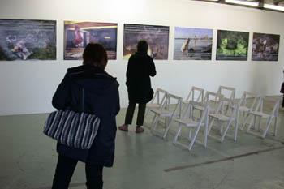
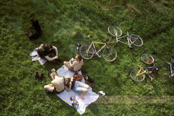
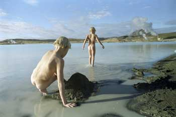
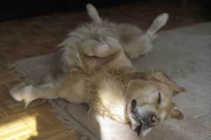
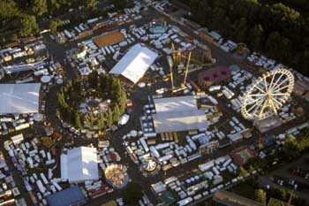
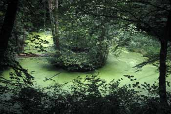
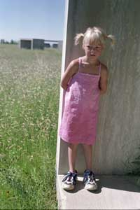

|
|
|
BÍÓ - KINO - MOVIES

|
Mótmæli á 1. maí - 1. Mai Demonstration - May Day demonstration
Á 1. maí er ótrúlega gott veður og ég hjóla yfir Leine að Faust til að taka myndir. Þar er fólk ekki beint að mótmæla heldur meira svona að skemmta sér og í sólbaði. Enda gott að liggja í grasinu. Kúrdarnir eru duglegastir að krefjast bættra kjarta á þessum alþjóðlega baráttudegi verkalýðsins, ég slæst í hóp þeirra á Klagesmarkt.
Am 1. Mai ist supergutes Wetter und ich fahre Rad über die Leine zum Faust, um Fotos zu machen. Dort sind die Leute nicht gerade am demonstrieren. Sie unterhalten sich eher und liegen in der Sonne. Das ist auch wunderbar, auf dem Rasen zu liegen. Die Kurden sind am fleißigsten zu demonstrieren an diesem internationalen Arbeitertag. Ich gehe mit am Klagesmarkt.
On the first of May the weather is very good and I go with my bike over the Leine river to Faust to take some photos. People are not really demonstrating there, they are sunbathing and having fun. It is great just to lie on the grass. The Kurds are more into demonstrating on this international workers day. I join them on Klagesmarkt.
|
Hugi og Lóa Aðalheiður í Bjarnarflagi - Hugi und Loa Adalheidur in Bjarnarflag - Hugi und Loa Adalheidur in Bjarnarflag
Það er haust og frábært veður svo við förum, í Mývatnssveit og böðum okkur í bláa lóninu í Bjarnarflagi. Það er frábært að buslar þarna og Lóa og Hugi byggja sandksatala og stýflu á ströndinni. Það slást nokkrir franskir ferðamenn í hópinn og sennilega líka Hollendingar. Á eftir ætlum við í sund en þá er búið að loka sundlauginni.
Es ist Herbst, das Wetter ist gut, und wir fahren an den Myvatn-See und baden in der blauen Lagune in Bjarnarflag. Da kann man toll planschen, Loa und Hugi bauen Sandburgen und Dämme am Strand. Ein paar französische Touristen machen mit und wohl auch ein paar Holländer. Hinterher wollen wir schwimmen gehen, aber da hat das Schwimmbad zugemacht.
It is autumn and the weather is great so we go on a trip to lake Myvatn and we take a bath in the blue lagoon at Bjarnarflag. It is perfect to paddle about there and Loa and Hugi build a sandcastle and a dam on the beach. A couple of French tourists join us and also some from the Netherlands I think. Afterwards we want to go to the swimming pool but then it is already closed.
|
Uppáhaldsstelling Leós Trotskis - Leos Trotskis Lieblingsposition - The favorit position of Leo Trotski
Þetta er Leó, hundur Láru og Ingu. Friðrik Haukur er samt sennilaga duglegastur að fara með hann út að ganga og Angelika gengur einnig með hann. Haukur kallar hann reyndar Leó Trotski og uppáhaldsstellingin hans er á bakinu á teppinu í stofunni þegar sólin skín inn um gluggann.
Das ist Leo, der Hund von Laura und Inga. Fridrik Haukur ist aber wohl am fleißigsten, mit ihm ´rauszugehen, Angelika macht das auch manchmal. Übrigens nennt Fridrik ihn Trotzki, und seine Lieblingsposition ist, auf dem Rücken im Wohnzimmer zu liegen, wenn dieSonne durchs Fenster scheint.
This is Leo, the dog from Lara and Inga. Fridrik Haukur is probably the keenest one taking him out for a walk and Angelika takes him out too. Fridrik calls him in fact Leo Trotzki and the favourite position of the dog is to lie on his back on the carpet in the living room when the sun shines through the window.
|
Schützenplatz úr loftbelg - Schützenplatz aus einem Heißluftballon - Schützenplatz from a hot air balloon
Við gáfum Huga flugferð með loftbelg í 10 ára afmælisgjöf. Kristín er frekar lofthrædd og Lóa Aðalheiður full ung svo ég fer með honum. Það er frábært veður og við fljúgum rólega yfir. Það er gaman að sjá borgina svona að ofan og á Schützenplatz er vorhátíðin í gangi. Mér verður samt augnablik hugsað til bókarinnar "Eilífrar ástar" eftir Ian McEwan um loftbelgsferð sem endar ekki sérlaga vel.
Hugi bekam zum 10. Geburtstag eine Fahrt im Heißluftballon geschenkt. Kristin ist nicht schwindelfrei, und Loa Adalheidur ist noch zu jung, also fliege ich mit ihm. Das Wetter ist toll und wir schweben langsam dahin. Es ist schön, die Stadt von oben zu sehen, und auf dem Schützenplatz ist gerade das Schützenfest. Ich denke aber einen Augenblick an das Buch „Liebeswahn“ von Ian McEwan, wo es um eine Ballonfahrt geht, die nicht sehr gut endet.
We gave Hugi a trip with the balloon on his tenth birthday. Kristin is rather afraid of heights and Loa rather young so i go with him. The weather is perfect and we fly softly away. It is fun to see the city like this from above and on Schuetzenplatz is the springfestival. Allthough I think of the book Enduring love from Ian McEwan about a trip with a balloon that does not end that well at all.
|
Græna vatnið í Worpswede - Der grüne See im Worpswede - The green lake in Worpswede
Um veturinn hugsaði ég mér gott til glóðarinnar því ég hélt að það yrði hægt að synda í þessu vatni um vorið. En þegar fór að vora kom svona græn slíkja yfir vatnið og vonlaust að synda í því. En það var allt í lagi því græni liturinn var svo ótrúlega fallegur að ég stóð bara agndofa og horfði á hann. Það var eins og hann lýsti upp skóginn.
Im Winter freute ich mich darauf, im Frühjahr in diesem See zu schwimmen. Aber im Frühling kam grüne Entengrütze auf das Wasser und es war hoffnungslos, darin zu schwimmen. Aber das war ganz in Ordnung; die grüne Farbe war so unglaublich schön, dass ich nur da stand und fasziniert war. Es war, als ob sie den ganzen Wald erleuchtete.
In the winter I thought it would be a great idea to take a swim in this water in the springtime. But when the spring came there also came a green algae on the water and there was no way to swim in it. But that was all right because the green colour was unbelievably beautiful and I just stood there and gazed at it. It was like it was lighting up the forest.
|
Lóa og mínimalistarnir -
Loa und die minimalisten -
Loa and the minimalists
Þetta er Lóa Aðalheiður Kristínardóttir. Hún verður bráðum fimm og hálfs. Henni finnst mínimalismi mjög skemmtilegur. Hér stendur hún einmitt í einu af 15 steinsteipuverkum eftir Donald Judd við Chinati stofnunina í Marfa í Texas og horfir á nokkur önnur svipuð. Allrabest finnsthenni samt ljósaverkiðverkið hans Dans Flavins, án titils. Það er flott.
Das ist Loa Adalheidur Kristinardottir. Sie wird bald fünfeinhalb. Sie findet Minimalismus sehr lustig. Hier steht sie gerade in einer von 15 Betonarbeiten von Doanld Judd bei der Chinati Foundation in Marfa, Texas und sieht sich noch ein Paar ähnliche an. Am allerliebsten mag sie aber die Lichtarbeit, ohne Titel, von Dan Flavin. Die ist echt cool.
This is Loa Adalheidur Kristinardottir. She will soon be five and half. She thinks minimalism is very funny. Here she is standing in one of the 15 concrete works from Donald Judd at the Chinati Foundation in Marfa, Texas and looking at some more. The best of all she says is the untitled light work from Dan Flavin. That is real cool.
|